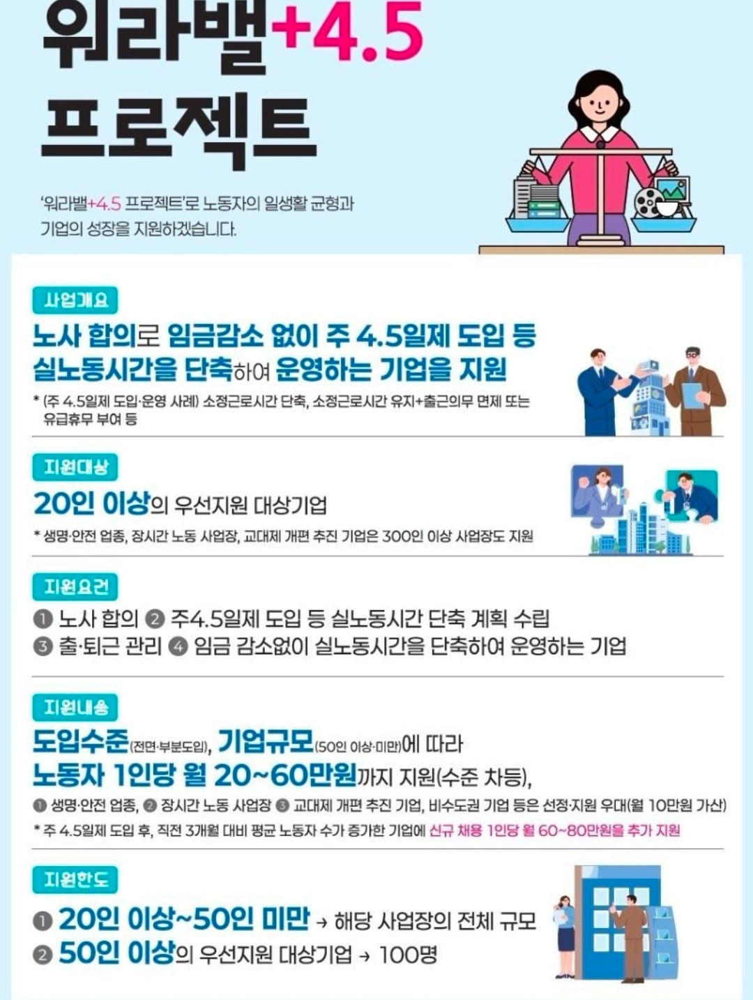

임금감소 없는 워라벨+주4.5일제 프로젝트
댓글
나는 9 5 근무가 현실 적이라 보는데
고객사 납기랑 A/S 생각하면 우리회사는 불가능이네 ㅋㅋㅋ
출퇴근 관리때메 안할려는 곳들도 있겠네
출퇴근 이력 제출같은거 요구하면 야근도 못시킬까봐
어쨌든 좋네 몇년뒤엔 진짜 주4일제 되겠다
AI가 있어도 일자리가 여전히 남아있다면
내가 다니는곳도 하면 좋겠지만... 점심시간에 셔터내리는것도 거품무는사람 많아서 못하는 판국에 저런건 언제쯤 가능할지ㅋㅋㅋ
우리회사는 지금 생산이 수주를 못따라가서 공장증설인데 안되겠지...? 서비스팀도 있고 그래서
포괄임금제부터 없애라고
저러면 의무 근무시간이 줄어드는건가
우리 회사는 불가능한 업종이라 슬프다
노동부는 여러 정책덕에
4.5일제가 아니라 주6일 하는 중